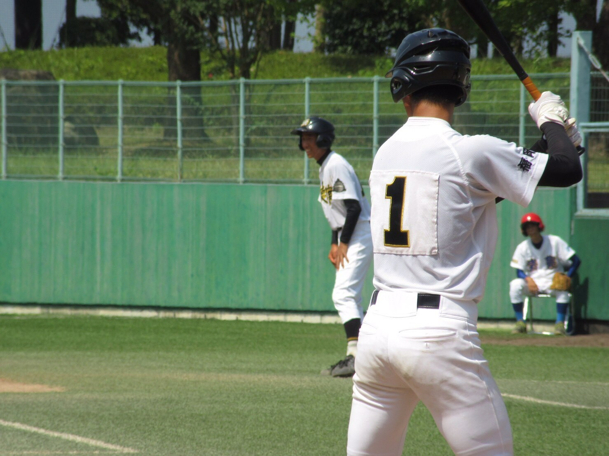
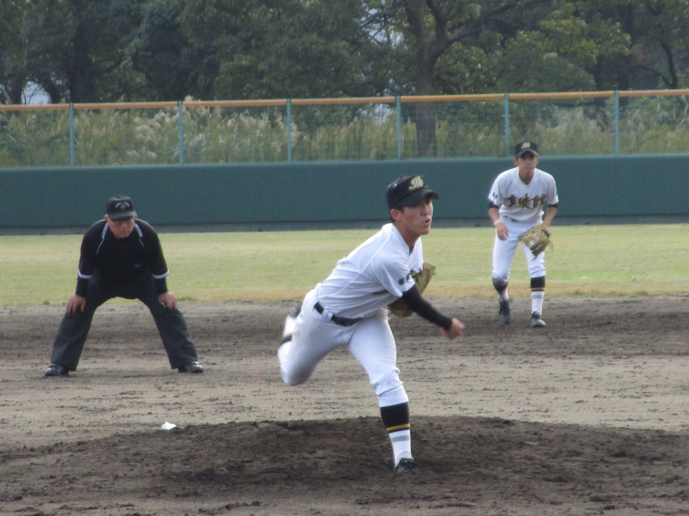
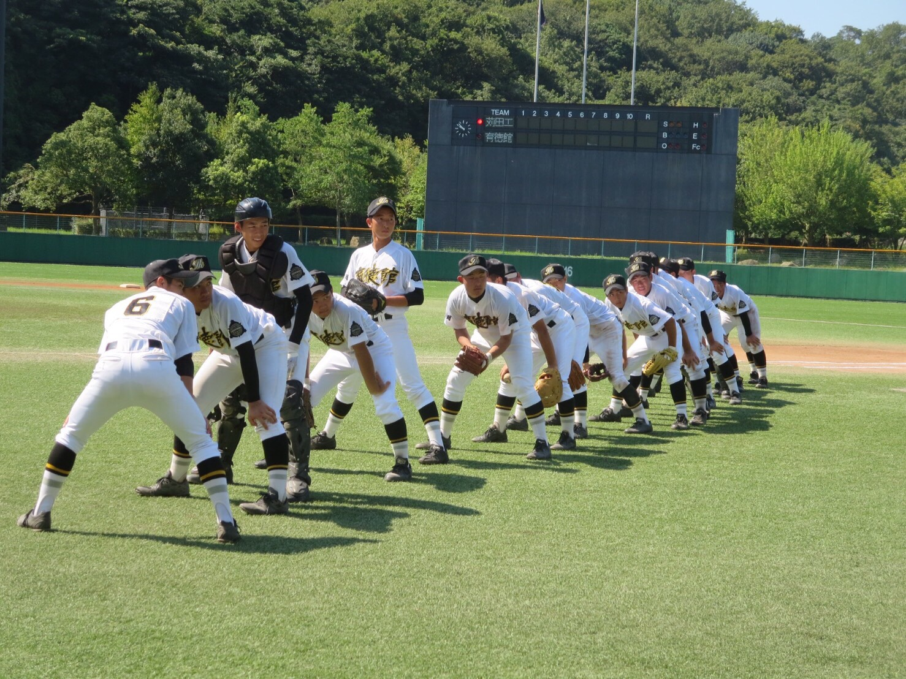
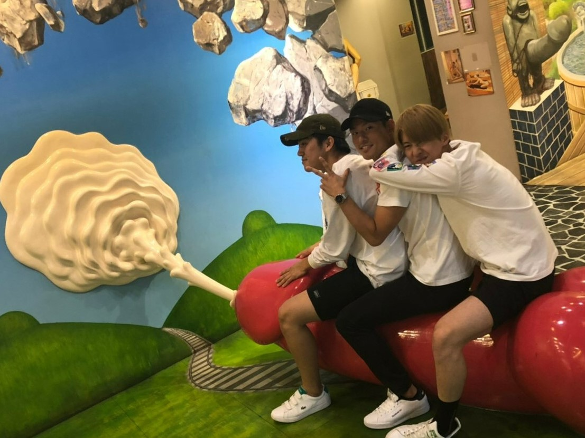
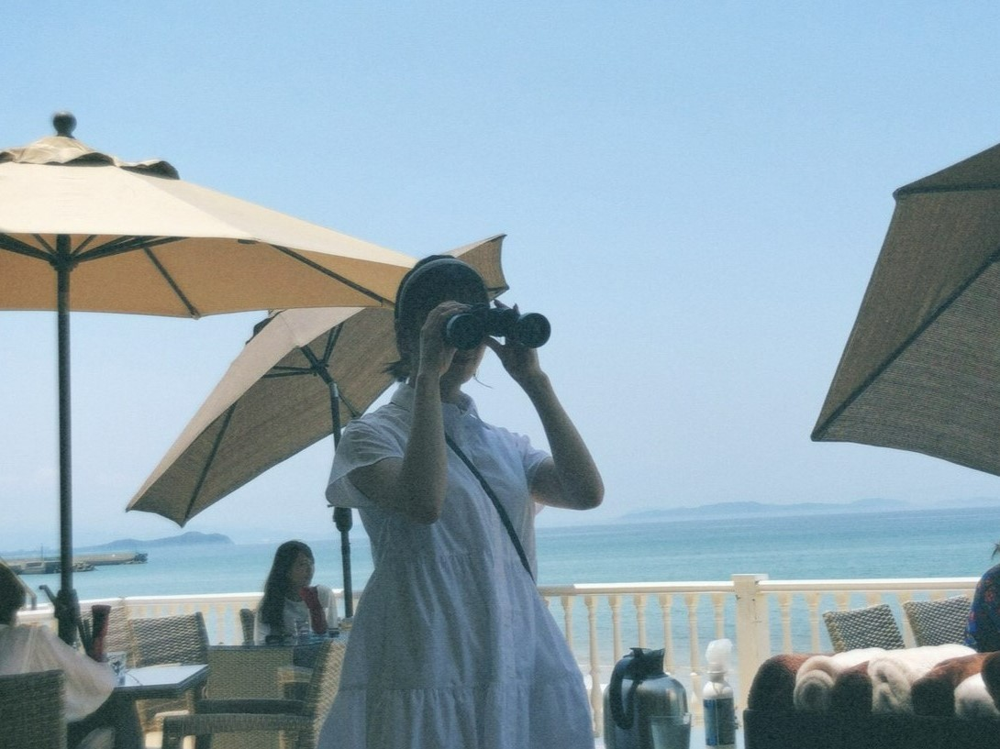
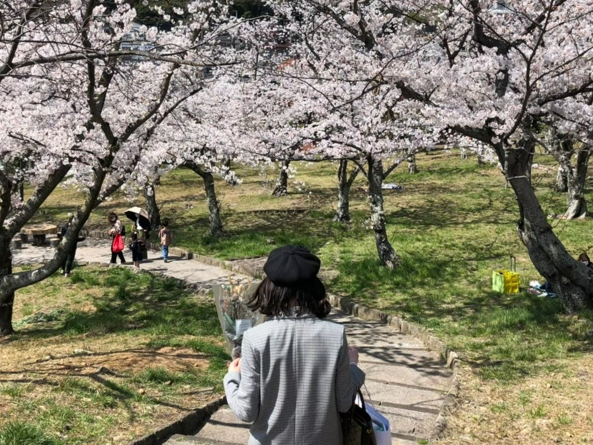
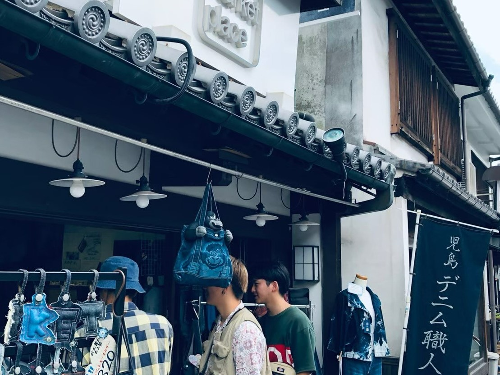
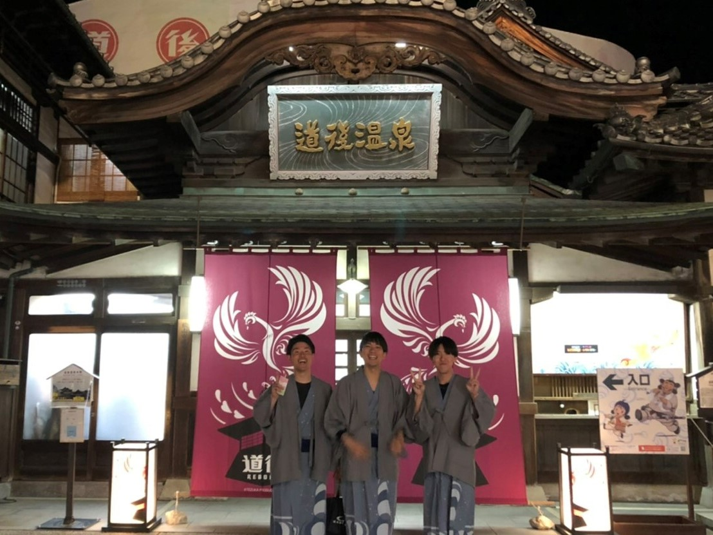

自己紹介②
②⚾
林健一郎



(自己PR)
・全くボールを触らない時期を作り、器具を用いた身体強化。
・自分の投球動作を動画撮影し、投球動作の分析。
半年でも元通りの投球ができず、思い悩む時期もあったが自分の可能性を信じ、くじけることなく練習に取り組んだ。その結果、最後の夏の大会では先発を任せられ、「結果」という形で恩返しをすることができた。私はこの経験から、どんなに苦しい状況でも努力を続ける姿勢を身に付けた。





(趣味)
趣味は、「料理・プチ旅行」。両親が飲食店を営んでおり、小さな頃から料理する父親の姿を見て育った。最近は、美味しいチャーハンを作るために様々なアレンジをしながら、日々研究をしている。私のイチオシは「明太子チャーハン」である。また、一人暮らし中に料理をすることで節約術も学ぶことができた。
彼女や友達と一緒に旅行することが休日の楽しみである。みんなと撮った写真や綺麗な風景写真を見返す時間、大好きな人たちと過ごす時間を大切にしている。